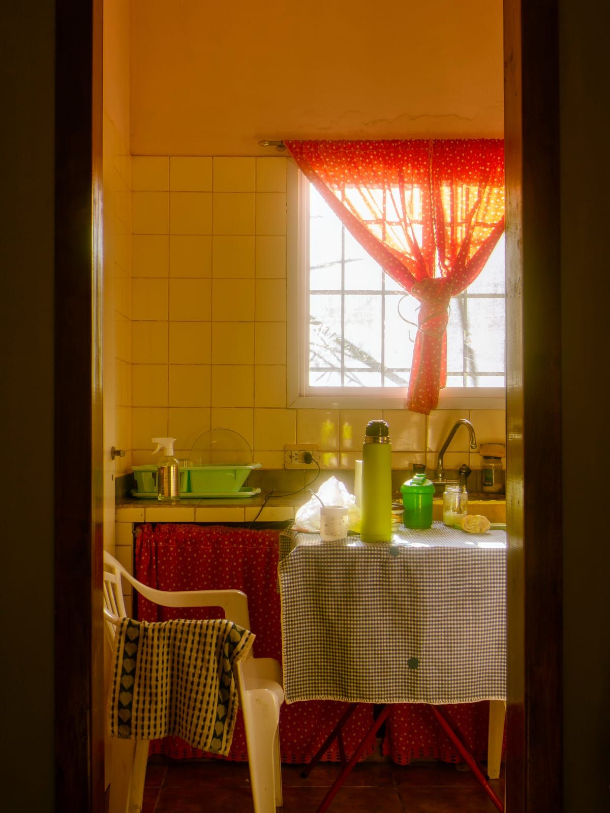

Inicio
Testimonios
Proyecto
Menú
POSTALES
Docuemtación real del trayecto de las mujeres entrevistadas.
AMELIA ROSALES
1.1 Amelia comprando fruta
1.2 Tortilleria
1.3 Comprando flores para el cumpleaños de su hermana
ISIDRA ALCANATARA
2.1 Isidra encomendadose a la virgen
2.2 Tianguis de celco el martes

2.3 Casa de Isidra